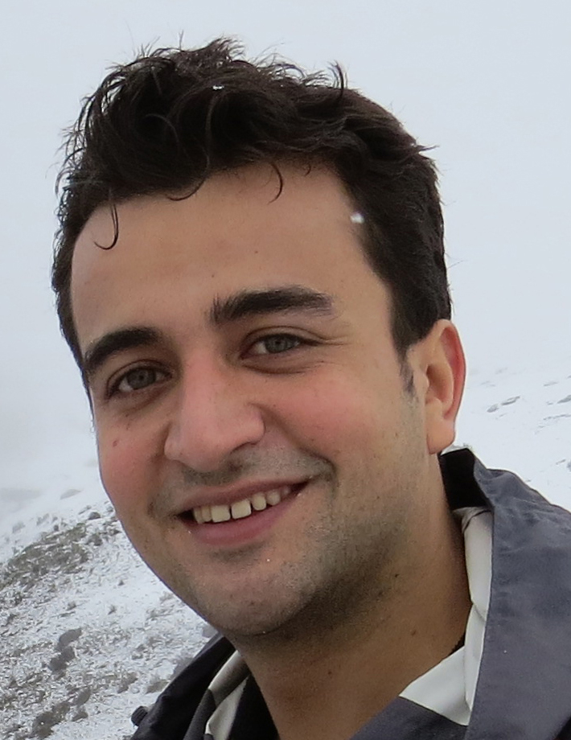
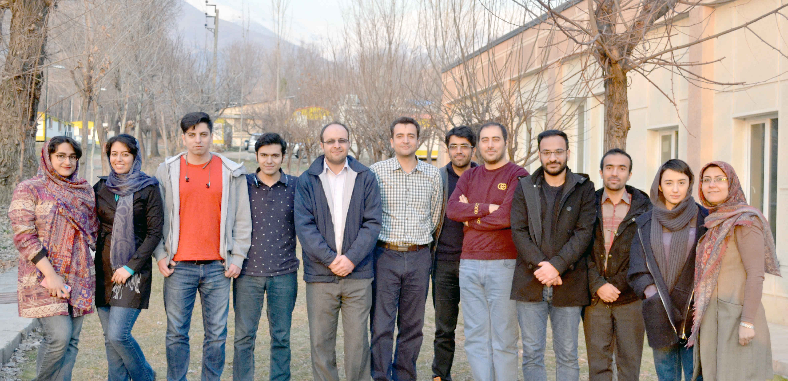
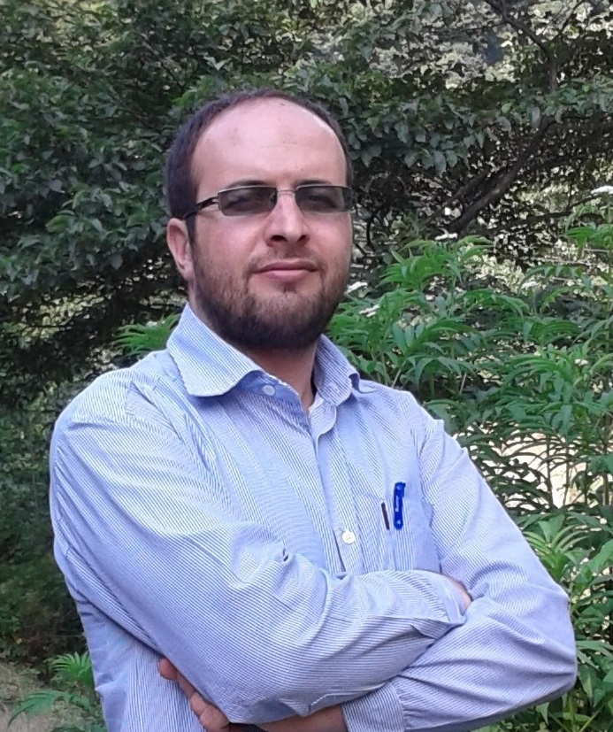
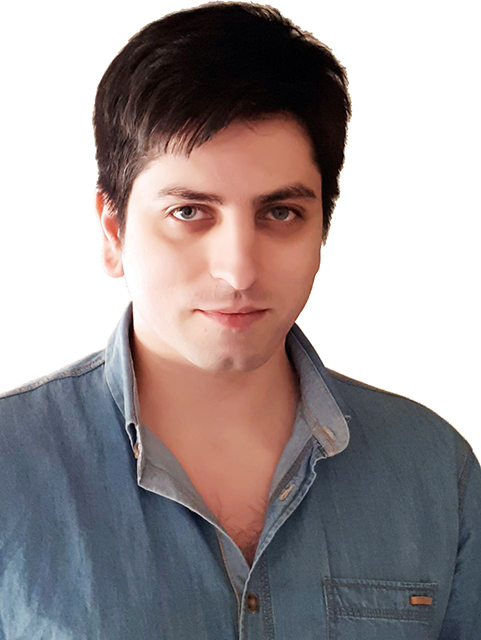
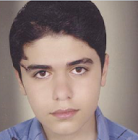
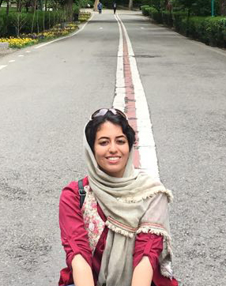
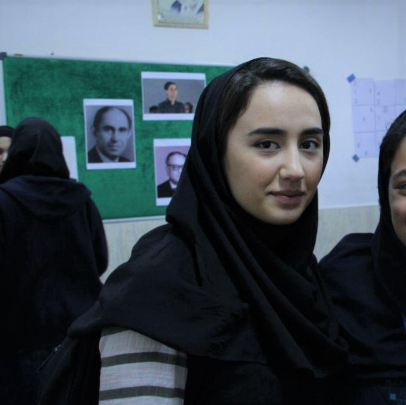
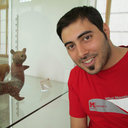
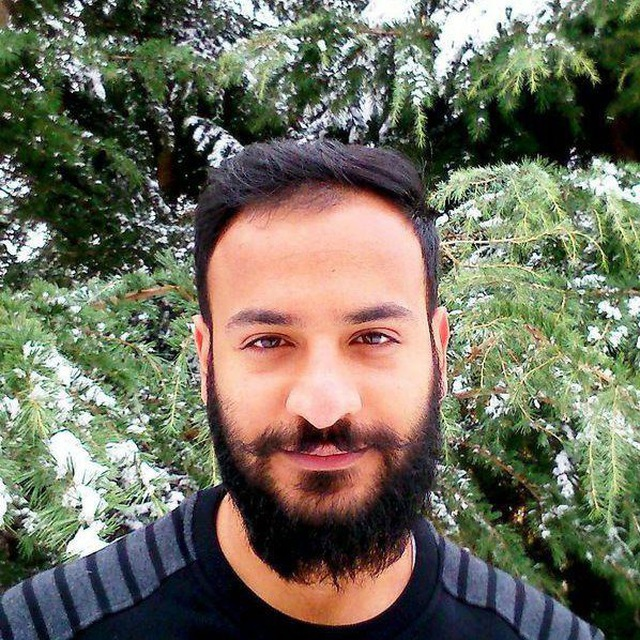
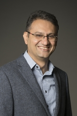

Brain Computing Lab (BCoL)

Mohammad-Reza Abolghasemi-Dehaqani
Principal Investigator
Faculty of Electrical and Computer Engineering,
University of Tehran
and
School of Cognitive Sciences (SCS) Institute for
Research in Fundamental Sciences (IPM)
Contact: abolghasemi [at] ipm [dot] ir

Description:
The long-term goal of our research is to identify the neural circuits underlying perceptual and cognitive functions. To this end, we are studying the activity of single and populations of neurons recorded from animals trained to perform selected cognitive tasks. Cognitive functions emerge from computations implemented by neuronal networks and through application of a mixture of electrophysiological, behavioral, and computational techniques, we hope to play our role toward understanding the brain as a computational organ. Our current research focuses on the following topics: neuronal mechanisms involved in spatio-temporal dynamics of object representation, role of network states in preserving complex object information, neuronal feedback control for object recognition during partial occlusion, and the neuromodulatory basis of cognitive functions.
PhD Students

Ehsan Rezayat
Ph.D. Student
Prefrontal cortex with visual areas during object working memory tasks and a pharmacological manipulation of cortex
rezayat[at]ipm[dot]ir
Researchers
Farideh Shakerian, PhD
Post-Doc Fellow at Tarbiat Modares University
High level object recognition
f.shakerian[at]ipm[dot]ir

Hamed Heidari Gorji
Master of Computer Engineering
Machine Learning | Deep Learning | Computer Vision | Spiking Neural Network
hamed.h[at]live[dot]com

Behnam Karami
Doctor of Medicine
Visual objects representation, temporal dynamics of perception
behnam079[at]gmail[dot]com

Farzad Shayanfar
MSc of physiology, SBMU.
Membrane physiology, systems neuroscience
farzad.shayanfar[at]gmail[dot]com

Roxana Koushki
Doctor of Medicine
Representation of spatial frequency in IT cortex
frx71.koushki[at]gmail[dot]com
Samane Navab
PhD Student at Shahid Beheshti University
Unconscious priming in different level of categorization
snavab[at]ipm[dot]ir

Atlas Shahamati
Master Student at Royan Institute
Pharmacological manipulation of cortex
atlas.shahamati[at]gmail[dot]com

Ramin Toosi
PhD Student at Uneversity of Tehran
Data analyzing for representation of spatial frequency in IT cortex
r.toosi[at]ut[dot]ac[dot]ir

Mohsen Hadianpour
Master of Statistics
Modeling neuronal network using graph approach
mohsenhadianpour[at]gmail[dot]com

Payam Pakravan
Master student at University of Tehran
Implementation of online spike sorting in FPGA
pakravan.payam[at]gmail[dot]com
Collaborators

Hossein Esteky
Professor of neural Sciences, SBMU School of Medicine

Behrad Noudoost
Department of Ophthalmology and Visual Sciences, University of Utah
behrad.noudoost[at]utah[dot]edu

Le Chang
University of Chinese Academy of Sciences
Object Vision
lechang[at]ion[dot]ac[dot]cn
Alumni
Mahdi Shafiei
Ph.D. Student at Utah State University
Time Perception
Group website:
bcolab.github.io
Selected Publications:
1- MR. Dehaghani, H. Vahabie, MB. Parsa, B. Noudoost and AR. Soltani
Selective Changes in Noise Correlations Contribute to an Enhanced Representation of Saccadic Targets in Prefrontal Neuronal Ensembles
Cerebral Cortex (2018), 1-18
2- H. Vahabie, M. Abolghasemi, M. Nili, B. Araabi and H. Esteky
Rapid face adaptation distributes representation in inferior-temporal cortex across time and neuronal dimensions
Scientific Reports 7 (2017), 1-13
3- M.R.A. Dehaqani, A. Vahabie, R. Kiani, M. Ahmadabadi, B. Araabi and H. Esteky
Temporal dynamics of visual category representation in the macaque inferior temporal cortex
Journal of Neurophysiology 116 (2016), 587-601
4- M.R.A. Dehaqani, M.A. Zarei, A.H. Vahabie and H. Esteky
Impairment of perceptual closure in autism for vertex-but not edge-defined object images
Journal of Vision 16 (2016), 10-10